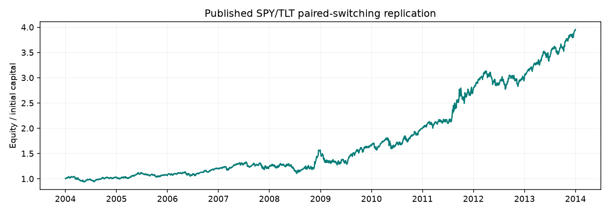

机构文章对标 · SPY / TLT 配对轮动
机构报道：Alpha Architect；精确数值来源：Glenn 原文，IFTA 2021，第 95 页表 1 第一行。收益与回撤在表中以小数显示。
| 指标 | 原文精确值 | 本地复现 | 相对偏差 | 通过 |
|---|
| total_return | 2.941000 | 2.953591 | 0.43% | True |
| annualized_return | 0.146000 | 0.146294 | 0.20% | True |
| max_drawdown | -0.189000 | -0.188646 | 0.19% | True |
| order_count | 45.000000 | 45.000000 | 0.00% | True |

口径与限制
- This reproduces the SPY/TLT article model separately from the audited SPY20/50 sample.
- Article execution at signal close is replicated; it is not the next-open execution used by the main sample.
- Trade count means each BUY or SELL: one switch is two orders. No final artificial sale.
- Paper states nominal transaction costs but no amount; fixed $1 per order was declared before replay.
- Current-vintage Yahoo adjusted prices can differ from the author's historical inputs; distributions are embedded once, with no additional dividend cash.
- The paper abstract's 30% average annual return is not CAGR. Table 1 gives 14.6% CAGR; the same table gives 18.9% drawdown whereas body text rounds to 18.8%.
全部逐日账本、订单、原文定位、冻结配置和数据哈希